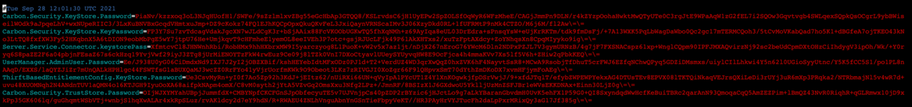

Advanced configuration for Ethos Identity
Advanced configurations can enhance the experience but are not required for Ellucian Ethos Identity.
Apply your custom branding
Ellucian Ethos Identity provides several branding options for the delivered assets. You can modify the logo, accent gradient, and page title.
Branding guidelines
Product branding is stored in the index.css file located in the following directory on the Ellucian Ethos Identity server: EIS_HOME/repository/deployment/server/webapps/ authenticationendpoint/ellucian.
You can customize authentication page styling elements including fonts, colors, and positioning. If you customize elements, you must merge the changes into future Ellucian Ethos Identity releases when you upgrade.
Files under EIS_HOME/repository/deployment/server/webapps/authenticationendpoint and EIS_HOME/repository/deployment/server/webapps/accountrecoveryendpoint directories will typically change in future releases. If you make customizations that require HTML changes, you must manually merge your customizations with the delivered Ellucian changes.
Change the logo
Change the logo for Ellucian Ethos Identity.
Procedure
Results
- If the new logo is not displayed in the browser, clear the browser cache.
- Verify that the new logo is a case-sensitive file name match.
Change the gradient
Change the gradient on Ellucian Ethos Identity.
Procedure
- Navigate to the EIS_HOME/repository/deployment/server/webapps/authenticationendpoint/ellucian directory on the Ellucian Ethos Identity server.
-
Edit index.css and locate the
/* BEGIN GRADIENT */and/* END GRADIENT */comments. - Enter the desired gradient or background image in this code block.
Change the page title
Change the page title of your Ellucian Ethos Identity instance.
Procedure
| Directory | JSP files |
|---|---|
| EIS_HOME/repository/deployment/server/webapps/accountrecoveryendpoint/ |
|
| EIS_HOMErepository/deployment/server/webapps/authenticationendpoint/ |
|
Reconcile your customizations after an upgrade
If you customize the JSP files or other assets in the WSO2 Identity Server, you must reconcile the differences in your customizations when you upgrade the Ellucian Ethos Identity product.
Upgrading the Ellucian Ethos Identity product does not move or merge your product customizations under the authenticationendpoint or accountrecoveryendpoint application. With new releases, WSO2 Identity Server delivers modified JSP files and other assets to correct bugs and introduce enhancements. In addition, Ellucian Ethos Identity delivers styling and security customizations with the latest WSO2 changes.
If you customize the JSP files or other assets, you must reconcile the differences in your customizations. If you do not reconcile the differences, it can cause broken functionality and introduce security risks. You must manually merge any customization made to JSP files or other assets under the following application:
EIS_HOME/repository/deployment/server/webapps/accountrecoveryendpoint/
EIS_HOMErepository/deployment/server/webapps/authenticationendpoint/
Customize the redirection page
When the user is redirected back to the Service Provider from Ethos Identity, samlsso_response.html, redirection page is temporarily displayed. This page can be customized to have the look and feel of the institution.
About this task
Procedure
Anti-clickjacking
Clickjacking is an attack that tricks a user into clicking a webpage element which is invisible or disguised as another element.
Configure anti-clickjacking for single domain
Leverage the X-Frame-Options header to indicate if a browser is allowed to render Ethos Identity as framed or embedded content.
Before you begin
Procedure
Configure anti-clickjacking for multiple domain
Allows you to specify multiple domains which can load Ethos Identity within framed or embedded content.
About this task
Update the Content Security Policy header to control resources the user agent is allowed to load from a given page. It also allows you to specify the domain in a list, or with the use of wild cards.
Example: Content-Security-Policy: frame-ancestors *.domain1.edu *.domain1.edu:* *.domain2.edu *.domain2.edu:*
Many older browsers like Internet Explorer up until version 11 don't support to the Content Security Policy.
- The anti-clickjacking support for multiple domains feature available from EllucianEthosIdentiy_Patch_5.10.8 or later version.
- Ethos Identity 5.10.7 or lower requires an update to 5.10.8 to support anti-clickjacking for multiple domains.
Procedure
Multi-factor authentication for Ethos Identity
Ellucian Ethos Identity supports multi-factor authentication using the following security authenticators.
- Double Up On (Duo) Universal Prompt
- Fast IDentity Online (FIDO)
- Time-Based One Time Password (TOTP)
- SMS One Time Password (OTP)
- Email One Time Password (OTP)
| Security Authenticators | WSO2 documentation page |
|---|---|
| Configure DUO Universal Prompt | For more information, see Configure Web SDK for Duo Universal Prompt. There are two configuration options as follows:
By default, the user portal associate account gadget icon is available to the Admin-user.
Note: Ellucian Ethos Identity is not supporting the use case as an association and the user portal associate account gadget is restricted to non-admin users.
|
| Configure FIDO setup | Refer to Configuring Multi-factor Authentication using FIDO on the WSO2 documentation website for the corresponding WSO2 version. |
| Configure TOTP setup | Refer to Configuring TOTP Authenticator on the WSO2 documentation website for the corresponding WSO2 version. |
| Configure SMS OTP setup | Refer to Configuring SMS OTP on the WSO2 documentation website for the corresponding WSO2 version. |
| Configure Email OTP setup | Refer to Configuring Email OTP on the WSO2 documentation website for the corresponding WSO2 version. |
Configure Web SDK for Duo Universal Prompt
Double Up On (Duo) Universal Prompt is a new authentication experience for web-based applications.
Procedure
Enable Arabic translation
Ellucian Ethos Identity provides internationalization support for web applications such as the authentication endpoint and account recovery endpoint.
Before you begin
- Ensure that the Arabic file Resources_ar.properties is available in the following locations:
- <EIS_HOME>/repository/deployment/server/webapps/authenticationendpoint/WEB-INF/classes/org/wso2/carbon/identity/application/authentication/endpoint/i18n/
- <EIS_HOME>/repository/deployment/server/webapps/ accountrecoveryendpoint\WEB-INF\classes\org\wso2\carbon\identity\mgt\recovery\endpoint\i18n
- You must have configured the Arabic language in the browser before you enable the Arabic translation.
About this task
To provide i18n support for Ellucian Ethos Identity 5.7.1 or later, perform the following steps:
Procedure
Enable Spanish translation
Ellucian Ethos Identity provides internationalization support for the web applications such as authentication endpoint and account recovery endpoint.
Before you begin
- Make sure that the Spanish file Resources_es.properties is available at the following locations:
- <EIS_HOME>/repository/deployment/server/webapps/authenticationendpoint/WEB-INF/classes/org/wso2/carbon/identity/application/authentication/endpoint/i18n/
- <EIS_HOME>/repository/deployment/server/webapps/ accountrecoveryendpoint\WEB-INF\classes\org\wso2\carbon\identity\mgt\recovery\endpoint\i18n
- You must have configured Spanish language in the browser before you enable the Spanish translation.
About this task
To provide i18n support for Ellucian Ethos Identity 5.7.x, perform the following steps:
Procedure
Publish an XACML policy to access Ellucian Ethos Identity by user store
To access Ellucian Ethos Identity by user store, you need to publish the XACML policy to Policy Decision Point (PDP).
Procedure
Copy service provider configuration through export and import
You can export or import a service provider configuration as an XML configuration file.
- Create and configure the service provider in instance A.
- Export service provider as an XML file.
- Import the XML file in instance B to create the service provider with the same configuration as an instance A.
- Repeat steps 3 for all other instances to copy the same service provider configuration.
Export a service provider
You can export a service provider configuration as an XML file.
Procedure
Results
Import a service provider
If requires, you can make the configuration changes in the exported Service_provider_Name.xml and import the service provider.
Procedure
- Log in to the Management Console.
- Click the Main tab.
- Under Service Providers, click Add.
- Under Select Mode, select File Configuration.
- Under Upload Service Provider File, click Choose File, select the Service_provider_Name.xml file, and then click Import.
- Make the changes in the service provider configurations if requires and click Update.
Results
Adaptive authentication
Adaptive authentication is a method for selecting the right authentication factors depending on a user’s risk profile, tendencies, or sensitivity of a resource - by adapting the authentication to the situation.
It dynamically employs multi-factor authentication to adjust the authentication requirements for access to a given resource.
Configure IP-based adaptive authentication
IP-based adaptive authentication allows for the requirement of an additional level of authentication for users logging in from external networks or other geographic locations. Using the IP-based adaptive authentication template, you can specify network ranges using the IP address.
Procedure
Test IP-based authentication script
You can test the sample authentication script.
Procedure
Configure Role-based adaptive authentication
Role-based adaptive authentication allows for the requirement of an additional level of authentication for users from the specified roles.
Procedure
Test Role-based authentication script
You can test the sample authentication script.
Procedure
Configure User Store-based adaptive authentication
User Store-based adaptive authentication allows for the requirement of an additional level of authentication for users logging in from other user store domains.
Procedure
Test User store -based authentication script
You can test the sample authentication script.
Procedure
Enable logging in log4j2
Log4J 2 is a logging framework designed to address the logging requirements of enterprise applications. Log4j 2 is a new and improved version of the classic Log4j framework.
About this task
The log4j2.properties governs how logging is performed by the server and it can be found in the /conf directory. You can edit the log4j2.properties file in the /conf directory.
Procedure
List of logs
List of log4j2 debugging logs examples for various issues.
| Issues | Log examples | |
|---|---|---|
| To debug any application level and authentication related issues |
|
|
| To debug the cas service provider related issues |
|
|
| To debug the SAML service provider related issues |
|
|
| To debug the scim2 related claims issues |
|
|
| To debug userstore related issues |
|
|
| To debug the user core related issues |
|
|
| To debug agent related issues Note: Applicable only for SaaS deployments.
|
At EEID level |
|
| Websocket side |
|
|
| Agent side |
|
|
| To debug the very detailed logging for the user profile view related issues |
|
|
Encrypt passwords with Cipher Tool
Using the Ellucian Ethos Identity server's secure vault implementation, you can encrypt the plain text passwords in configuration files.
Procedure
Results

Change encrypted password
You can modify the encrypted password.
Before you begin
Procedure
Results
Enable custom app password
Setting a secure password with a WSO2-2023-2617 complies with WSO's security advisory.
About this task
Example: FjW8020nKEUdkzf
Procedure
Results
| File name | Values |
|---|---|
| EIS_HOME repository/conf/identity/identity.xml for SHA-256 hash value |
|
| EIS_HOME repository/conf/identity/EndpointConfig.properties for app.password |
|
| EIS_HOME repository/conf/identity/RecoveryEndpointConfig.properties for app.password Note:
If the 'RecoveryEndpointConfig.properties' file does not exist in the EIS_HOME/repository/conf/identity directory, get a copy of the RecoveryEndpointConfig.properties file located in the <EIS_HOME>/repository/deployment/server/webapps/accountrecoveryendpoint/ WEB-INF/classes directory. |
|
| EIS_HOME repository/deployment/server/webapps/accountrecoveryendpoint/WEB-INF/classes/RecoveryEndpointConfig.properties |
|
| EIS_HOME repository/deployment/server/webapps/authenticationendpoint/WEB-INF/classes/EndpointConfig.properties |
|